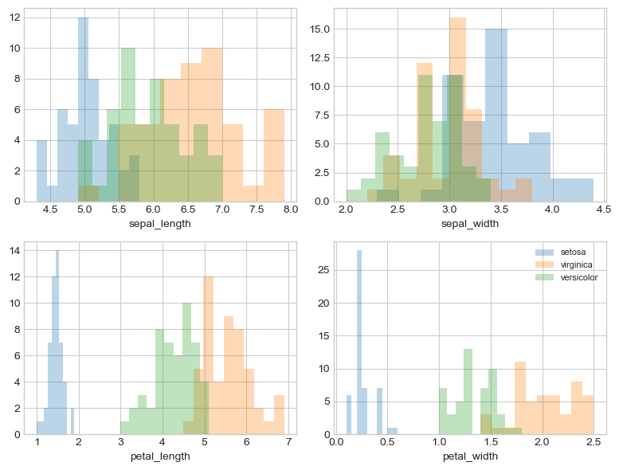
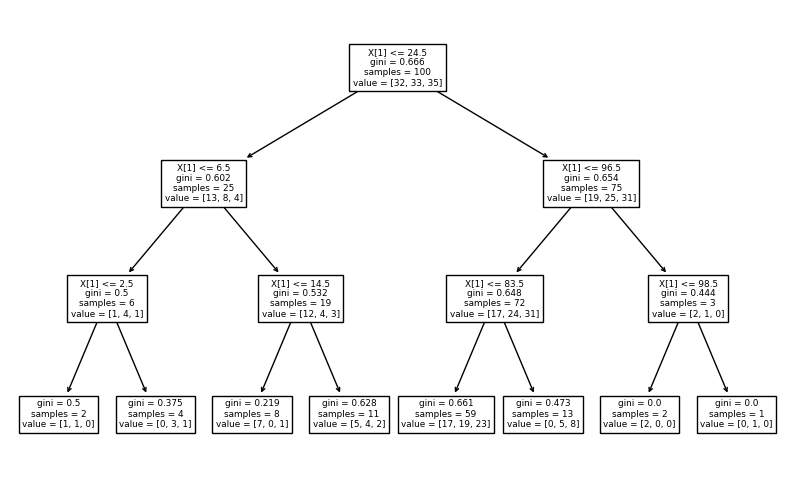

PCA#
import pandas as pd
import numpy as np
import seaborn as sns
import matplotlib.pyplot as plt
df=pd.read_csv('https://raw.githubusercontent.com/AnggaCristanto/dataset/main/iris.csv')
df.head()
| sepal.length | sepal.width | petal.length | petal.width | variety | |
|---|---|---|---|---|---|
| 0 | 5.1 | 3.5 | 1.4 | 0.2 | Iris-setosa |
| 1 | 4.9 | 3.0 | 1.4 | 0.2 | Iris-setosa |
| 2 | 4.7 | 3.2 | 1.3 | 0.2 | Iris-setosa |
| 3 | 4.6 | 3.1 | 1.5 | 0.2 | Iris-setosa |
| 4 | 5.0 | 3.6 | 1.4 | 0.2 | Iris-setosa |
df['species'].value_counts()
KeyErrorTraceback (most recent call last)
/usr/local/lib/python3.10/dist-packages/pandas/core/indexes/base.py in get_loc(self, key, method, tolerance)
3801 try:
-> 3802 return self._engine.get_loc(casted_key)
3803 except KeyError as err:
/usr/local/lib/python3.10/dist-packages/pandas/_libs/index.pyx in pandas._libs.index.IndexEngine.get_loc()
/usr/local/lib/python3.10/dist-packages/pandas/_libs/index.pyx in pandas._libs.index.IndexEngine.get_loc()
pandas/_libs/hashtable_class_helper.pxi in pandas._libs.hashtable.PyObjectHashTable.get_item()
pandas/_libs/hashtable_class_helper.pxi in pandas._libs.hashtable.PyObjectHashTable.get_item()
KeyError: 'species'
The above exception was the direct cause of the following exception:
KeyErrorTraceback (most recent call last)
<ipython-input-3-1a8c322653e2> in <cell line: 1>()
----> 1 df['species'].value_counts()
/usr/local/lib/python3.10/dist-packages/pandas/core/frame.py in __getitem__(self, key)
3805 if self.columns.nlevels > 1:
3806 return self._getitem_multilevel(key)
-> 3807 indexer = self.columns.get_loc(key)
3808 if is_integer(indexer):
3809 indexer = [indexer]
/usr/local/lib/python3.10/dist-packages/pandas/core/indexes/base.py in get_loc(self, key, method, tolerance)
3802 return self._engine.get_loc(casted_key)
3803 except KeyError as err:
-> 3804 raise KeyError(key) from err
3805 except TypeError:
3806 # If we have a listlike key, _check_indexing_error will raise
KeyError: 'species'
df.columns
Index(['sepal_length', 'sepal_width', 'petal_length', 'petal_width',
'species'],
dtype='object')
X=df.iloc[:,0:4].values
y=df.iloc[:,4].values
label_dict={1: 'setosa',
2: 'virginica',
3: 'versicolor'}
feature_dict={0: 'sepal_length',1: 'sepal_width',2: 'petal_length',3: 'petal_width'}
with plt.style.context('seaborn-whitegrid'):
plt.figure(figsize=(8,6))
for i in range(4):
plt.subplot(2,2,i+1)
for lab in ('setosa','virginica','versicolor'):
plt.hist(X[y==lab, i],
label=lab,
bins=10,
alpha=0.3)
plt.xlabel(feature_dict[i])
plt.legend(loc='upper right', fancybox=True,fontsize=8)
plt.tight_layout()
plt.show()

from sklearn.preprocessing import StandardScaler
X_std=StandardScaler().fit_transform(X)
mean_vec=np.mean(X_std,axis=0)
cov_mat=(X_std-mean_vec).T.dot((X_std-mean_vec))/(X_std.shape[0]-1)
print("Covariance Matrix \n%s" %cov_mat)
Covariance Matrix
[[ 1.00671141 -0.11010327 0.87760486 0.82344326]
[-0.11010327 1.00671141 -0.42333835 -0.358937 ]
[ 0.87760486 -0.42333835 1.00671141 0.96921855]
[ 0.82344326 -0.358937 0.96921855 1.00671141]]
print("Numpy Covariance matrix \n%s" %np.cov(X_std.T))
Numpy Covariance matrix
[[ 1.00671141 -0.11010327 0.87760486 0.82344326]
[-0.11010327 1.00671141 -0.42333835 -0.358937 ]
[ 0.87760486 -0.42333835 1.00671141 0.96921855]
[ 0.82344326 -0.358937 0.96921855 1.00671141]]
cov_mat=np.cov(X_std.T)
eig_vals, eig_vecs=np.linalg.eig(cov_mat)
print("Eigenvectors \n%s" %eig_vecs)
print("Eigenvelues \n%s" %eig_vals)
Eigenvectors
[[ 0.52237162 -0.37231836 -0.72101681 0.26199559]
[-0.26335492 -0.92555649 0.24203288 -0.12413481]
[ 0.58125401 -0.02109478 0.14089226 -0.80115427]
[ 0.56561105 -0.06541577 0.6338014 0.52354627]]
Eigenvelues
[2.93035378 0.92740362 0.14834223 0.02074601]
corr_mat1=np.corrcoef(X_std.T)
eig_vals, eig_vecs=np.linalg.eig(corr_mat1)
print("Eigenvectors \n%s" %eig_vecs)
print("Eigenvelues \n%s" %eig_vals)
Eigenvectors
[[ 0.52237162 -0.37231836 -0.72101681 0.26199559]
[-0.26335492 -0.92555649 0.24203288 -0.12413481]
[ 0.58125401 -0.02109478 0.14089226 -0.80115427]
[ 0.56561105 -0.06541577 0.6338014 0.52354627]]
Eigenvelues
[2.91081808 0.92122093 0.14735328 0.02060771]
cor_mat2=np.corrcoef(X.T)
eig_vals, eig_vecs=np.linalg.eig(cor_mat2)
print("Eigenvectors \n%s" %eig_vecs)
print("Eigenvelues \n%s" %eig_vals)
Eigenvectors
[[ 0.52237162 -0.37231836 -0.72101681 0.26199559]
[-0.26335492 -0.92555649 0.24203288 -0.12413481]
[ 0.58125401 -0.02109478 0.14089226 -0.80115427]
[ 0.56561105 -0.06541577 0.6338014 0.52354627]]
Eigenvelues
[2.91081808 0.92122093 0.14735328 0.02060771]
u, s, v=np.linalg.svd(X_std.T)
u
array([[-0.52237162, -0.37231836, 0.72101681, 0.26199559],
[ 0.26335492, -0.92555649, -0.24203288, -0.12413481],
[-0.58125401, -0.02109478, -0.14089226, -0.80115427],
[-0.56561105, -0.06541577, -0.6338014 , 0.52354627]])
for ev in eig_vecs.T:
np.testing.assert_array_almost_equal(1.0, np.linalg.norm(ev))
print("Everithing is ok")
Everithing is ok
# Make a list of (eigenvalue, eigenvector) tuples
eig_pairs = [(np.abs(eig_vals[i]), eig_vecs[:,i]) for i in range(len(eig_vals))]
# Sort the (eigenvalue, eigenvector) tuples from high to low
eig_pairs.sort(key=lambda x: x[0], reverse=True)
# Visually confirm that the list is correctly sorted by decreasing eigenvalues
print('Eigenvalues in descending order:')
for i in eig_pairs:
print(i[0])
Eigenvalues in descending order:
2.9108180837520514
0.921220930707224
0.14735327830509637
0.020607707235625352
tot = sum(eig_vals)
var_exp = [(i / tot)*100 for i in sorted(eig_vals, reverse=True)]
cum_var_exp = np.cumsum(var_exp)
with plt.style.context('seaborn-whitegrid'):
plt.figure(figsize=(6, 4))
plt.bar(range(4), var_exp, alpha=0.5, align='center',
label='individual explained variance')
plt.step(range(4), cum_var_exp, where='mid',
label='cumulative explained variance')
plt.ylabel('Explained variance ratio')
plt.xlabel('Principal components')
plt.legend(loc='best')
plt.tight_layout()
matrix_w = np.hstack((eig_pairs[0][1].reshape(4,1),
eig_pairs[1][1].reshape(4,1)))
print('Matrix W:\n', matrix_w)
Matrix W:
[[ 0.52237162 -0.37231836]
[-0.26335492 -0.92555649]
[ 0.58125401 -0.02109478]
[ 0.56561105 -0.06541577]]
Y = X_std.dot(matrix_w)
with plt.style.context('seaborn-whitegrid'):
plt.figure(figsize=(6, 4))
for lab, col in zip(('setosa', 'versicolor', 'virginica'),
('blue', 'red', 'green')):
plt.scatter(Y[y==lab, 0],
Y[y==lab, 1],
label=lab,
c=col)
plt.xlabel('Principal Component 1')
plt.ylabel('Principal Component 2')
plt.legend(loc='lower center')
plt.tight_layout()
plt.show()
from sklearn.decomposition import PCA as sklearnPCA
sklearn_pca = sklearnPCA(n_components=2)
Y_sklearn = sklearn_pca.fit_transform(X_std)
with plt.style.context('seaborn-whitegrid'):
plt.figure(figsize=(6, 4))
for lab, col in zip(('setosa', 'versicolor', 'virginica'),
('blue', 'red', 'green')):
plt.scatter(Y_sklearn[y==lab, 0],
Y_sklearn[y==lab, 1],
label=lab,
c=col)
plt.xlabel('Principal Component 1')
plt.ylabel('Principal Component 2')
plt.legend(loc='upper center')
plt.tight_layout()
plt.show()
data=pd.DataFrame(Y_sklearn)
data.columns=['X','Y']
data
| X | Y | |
|---|---|---|
| 0 | -2.264542 | 0.505704 |
| 1 | -2.086426 | -0.655405 |
| 2 | -2.367950 | -0.318477 |
| 3 | -2.304197 | -0.575368 |
| 4 | -2.388777 | 0.674767 |
| ... | ... | ... |
| 145 | 1.870522 | 0.382822 |
| 146 | 1.558492 | -0.905314 |
| 147 | 1.520845 | 0.266795 |
| 148 | 1.376391 | 1.016362 |
| 149 | 0.959299 | -0.022284 |
150 rows 2 columns
data['species']=df['species']
data
| X | Y | species | |
|---|---|---|---|
| 0 | -2.264542 | 0.505704 | setosa |
| 1 | -2.086426 | -0.655405 | setosa |
| 2 | -2.367950 | -0.318477 | setosa |
| 3 | -2.304197 | -0.575368 | setosa |
| 4 | -2.388777 | 0.674767 | setosa |
| ... | ... | ... | ... |
| 145 | 1.870522 | 0.382822 | virginica |
| 146 | 1.558492 | -0.905314 | virginica |
| 147 | 1.520845 | 0.266795 | virginica |
| 148 | 1.376391 | 1.016362 | virginica |
| 149 | 0.959299 | -0.022284 | virginica |
150 rows 3 columns
df=data
df
| X | Y | species | |
|---|---|---|---|
| 0 | -2.264542 | 0.505704 | setosa |
| 1 | -2.086426 | -0.655405 | setosa |
| 2 | -2.367950 | -0.318477 | setosa |
| 3 | -2.304197 | -0.575368 | setosa |
| 4 | -2.388777 | 0.674767 | setosa |
| ... | ... | ... | ... |
| 145 | 1.870522 | 0.382822 | virginica |
| 146 | 1.558492 | -0.905314 | virginica |
| 147 | 1.520845 | 0.266795 | virginica |
| 148 | 1.376391 | 1.016362 | virginica |
| 149 | 0.959299 | -0.022284 | virginica |
150 rows 3 columns
dataset =data
X = dataset.iloc[:,:2].values
y = dataset['species'].values
dataset.head(5)
| X | Y | species | |
|---|---|---|---|
| 0 | -2.264542 | 0.505704 | setosa |
| 1 | -2.086426 | -0.655405 | setosa |
| 2 | -2.367950 | -0.318477 | setosa |
| 3 | -2.304197 | -0.575368 | setosa |
| 4 | -2.388777 | 0.674767 | setosa |
MENGGUNAKAN NAIVE BAYES#
from sklearn.model_selection import train_test_split
X_train, X_test, y_train, y_test = train_test_split(X, y, test_size = 0.2, random_state=42)
from sklearn.preprocessing import StandardScaler
sc = StandardScaler()
X_train = sc.fit_transform(X_train)
X_test = sc.transform(X_test)
from sklearn.naive_bayes import GaussianNB
classifier = GaussianNB()
classifier.fit(X_train, y_train)
GaussianNB()
y_pred = classifier.predict(X_test)
y_pred
array(['versicolor', 'setosa', 'virginica', 'versicolor', 'virginica',
'setosa', 'versicolor', 'virginica', 'versicolor', 'versicolor',
'virginica', 'setosa', 'setosa', 'setosa', 'setosa', 'versicolor',
'virginica', 'versicolor', 'versicolor', 'virginica', 'setosa',
'virginica', 'setosa', 'virginica', 'virginica', 'virginica',
'virginica', 'virginica', 'setosa', 'setosa'], dtype='<U10')
from sklearn.metrics import confusion_matrix
cm = confusion_matrix(y_test, y_pred)
from sklearn.metrics import accuracy_score
print ("Accuracy : ", accuracy_score(y_test, y_pred))
cm
Accuracy : 0.9666666666666667
array([[10, 0, 0],
[ 0, 8, 1],
[ 0, 0, 11]], dtype=int64)
df = pd.DataFrame({'Real Values':y_test, 'Predicted Values':y_pred})
df
| Real Values | Predicted Values | |
|---|---|---|
| 0 | versicolor | versicolor |
| 1 | setosa | setosa |
| 2 | virginica | virginica |
| 3 | versicolor | versicolor |
| 4 | versicolor | virginica |
| 5 | setosa | setosa |
| 6 | versicolor | versicolor |
| 7 | virginica | virginica |
| 8 | versicolor | versicolor |
| 9 | versicolor | versicolor |
| 10 | virginica | virginica |
| 11 | setosa | setosa |
| 12 | setosa | setosa |
| 13 | setosa | setosa |
| 14 | setosa | setosa |
| 15 | versicolor | versicolor |
| 16 | virginica | virginica |
| 17 | versicolor | versicolor |
| 18 | versicolor | versicolor |
| 19 | virginica | virginica |
| 20 | setosa | setosa |
| 21 | virginica | virginica |
| 22 | setosa | setosa |
| 23 | virginica | virginica |
| 24 | virginica | virginica |
| 25 | virginica | virginica |
| 26 | virginica | virginica |
| 27 | virginica | virginica |
| 28 | setosa | setosa |
| 29 | setosa | setosa |
MENGGUNAKAN KNN#
from sklearn.model_selection import train_test_split
X_train, X_test, y_train, y_test = train_test_split(X, y, test_size = 0.2, random_state=42)
from sklearn.preprocessing import StandardScaler
sc = StandardScaler()
X_train = sc.fit_transform(X_train)
X_test = sc.transform(X_test)
from sklearn.metrics import confusion_matrix
cm = confusion_matrix(y_test, y_pred)
from sklearn.metrics import accuracy_score
print ("Accuracy : ", accuracy_score(y_test, y_pred))
cm
Accuracy : 0.9666666666666667
array([[10, 0, 0],
[ 0, 8, 1],
[ 0, 0, 11]], dtype=int64)
df = pd.DataFrame({'Real Values':y_test, 'Predicted Values':y_pred})
df
| Real Values | Predicted Values | |
|---|---|---|
| 0 | versicolor | versicolor |
| 1 | setosa | setosa |
| 2 | virginica | virginica |
| 3 | versicolor | versicolor |
| 4 | versicolor | virginica |
| 5 | setosa | setosa |
| 6 | versicolor | versicolor |
| 7 | virginica | virginica |
| 8 | versicolor | versicolor |
| 9 | versicolor | versicolor |
| 10 | virginica | virginica |
| 11 | setosa | setosa |
| 12 | setosa | setosa |
| 13 | setosa | setosa |
| 14 | setosa | setosa |
| 15 | versicolor | versicolor |
| 16 | virginica | virginica |
| 17 | versicolor | versicolor |
| 18 | versicolor | versicolor |
| 19 | virginica | virginica |
| 20 | setosa | setosa |
| 21 | virginica | virginica |
| 22 | setosa | setosa |
| 23 | virginica | virginica |
| 24 | virginica | virginica |
| 25 | virginica | virginica |
| 26 | virginica | virginica |
| 27 | virginica | virginica |
| 28 | setosa | setosa |
| 29 | setosa | setosa |
MENGGUNAKAN DECISION TREE#
df = data
df
| X | Y | species | |
|---|---|---|---|
| 0 | -2.264542 | 0.505704 | setosa |
| 1 | -2.086426 | -0.655405 | setosa |
| 2 | -2.367950 | -0.318477 | setosa |
| 3 | -2.304197 | -0.575368 | setosa |
| 4 | -2.388777 | 0.674767 | setosa |
| ... | ... | ... | ... |
| 145 | 1.870522 | 0.382822 | virginica |
| 146 | 1.558492 | -0.905314 | virginica |
| 147 | 1.520845 | 0.266795 | virginica |
| 148 | 1.376391 | 1.016362 | virginica |
| 149 | 0.959299 | -0.022284 | virginica |
150 rows 3 columns
df['species'].value_counts()
setosa 50
versicolor 50
virginica 50
Name: species, dtype: int64
df.isnull().sum()
X 0
Y 0
species 0
dtype: int64
X = df.drop(['species'], axis=1)
y = df['species']
from sklearn.model_selection import train_test_split
X_train, X_test, y_train, y_test = train_test_split(X, y, test_size = 0.33, random_state = 21)
X_train.shape, X_test.shape
((100, 2), (50, 2))
X_train.dtypes
X float64
Y float64
dtype: object
!pip install category_encoders
import category_encoders as ce
WARNING: Ignoring invalid distribution -rotobuf (c:\users\lu'luatul maknunah\appdata\roaming\python\python39\site-packages)
WARNING: Ignoring invalid distribution -rotobuf (c:\users\lu'luatul maknunah\appdata\roaming\python\python39\site-packages)
WARNING: Ignoring invalid distribution -rotobuf (c:\users\lu'luatul maknunah\appdata\roaming\python\python39\site-packages)
WARNING: Ignoring invalid distribution -rotobuf (c:\users\lu'luatul maknunah\appdata\roaming\python\python39\site-packages)
WARNING: Ignoring invalid distribution -rotobuf (c:\users\lu'luatul maknunah\appdata\roaming\python\python39\site-packages)
WARNING: Ignoring invalid distribution -rotobuf (c:\users\lu'luatul maknunah\appdata\roaming\python\python39\site-packages)
Defaulting to user installation because normal site-packages is not writeable
Requirement already satisfied: category_encoders in c:\users\lu'luatul maknunah\appdata\roaming\python\python39\site-packages (2.6.1)
Requirement already satisfied: patsy>=0.5.1 in c:\programdata\anaconda3\lib\site-packages (from category_encoders) (0.5.2)
Requirement already satisfied: pandas>=1.0.5 in c:\programdata\anaconda3\lib\site-packages (from category_encoders) (1.4.4)
Requirement already satisfied: scikit-learn>=0.20.0 in c:\programdata\anaconda3\lib\site-packages (from category_encoders) (1.0.2)
Requirement already satisfied: statsmodels>=0.9.0 in c:\programdata\anaconda3\lib\site-packages (from category_encoders) (0.13.2)
Requirement already satisfied: scipy>=1.0.0 in c:\programdata\anaconda3\lib\site-packages (from category_encoders) (1.9.1)
Requirement already satisfied: numpy>=1.14.0 in c:\programdata\anaconda3\lib\site-packages (from category_encoders) (1.21.5)
Requirement already satisfied: python-dateutil>=2.8.1 in c:\programdata\anaconda3\lib\site-packages (from pandas>=1.0.5->category_encoders) (2.8.2)
Requirement already satisfied: pytz>=2020.1 in c:\programdata\anaconda3\lib\site-packages (from pandas>=1.0.5->category_encoders) (2022.1)
Requirement already satisfied: six in c:\programdata\anaconda3\lib\site-packages (from patsy>=0.5.1->category_encoders) (1.16.0)
Requirement already satisfied: threadpoolctl>=2.0.0 in c:\programdata\anaconda3\lib\site-packages (from scikit-learn>=0.20.0->category_encoders) (2.2.0)
Requirement already satisfied: joblib>=0.11 in c:\programdata\anaconda3\lib\site-packages (from scikit-learn>=0.20.0->category_encoders) (1.1.0)
Requirement already satisfied: packaging>=21.3 in c:\programdata\anaconda3\lib\site-packages (from statsmodels>=0.9.0->category_encoders) (21.3)
Requirement already satisfied: pyparsing!=3.0.5,>=2.0.2 in c:\programdata\anaconda3\lib\site-packages (from packaging>=21.3->statsmodels>=0.9.0->category_encoders) (3.0.9)
encoder = ce.OrdinalEncoder(cols=["X","Y"])
X_train = encoder.fit_transform(X_train)
X_test = encoder.transform(X_test)
X_train.head()
| X | Y | |
|---|---|---|
| 52 | 1 | 1 |
| 49 | 2 | 2 |
| 65 | 3 | 3 |
| 118 | 4 | 4 |
| 55 | 5 | 5 |
X_test.head()
| X | Y | |
|---|---|---|
| 92 | -1.0 | -1.0 |
| 44 | -1.0 | -1.0 |
| 7 | -1.0 | -1.0 |
| 21 | -1.0 | -1.0 |
| 95 | -1.0 | -1.0 |
from sklearn.tree import DecisionTreeClassifier
clf_gini = DecisionTreeClassifier(criterion='gini', max_depth=3, random_state=21)
clf_gini.fit(X_train, y_train)
DecisionTreeClassifier(max_depth=3, random_state=21)
y_pred_gini = clf_gini.predict(X_test)
from sklearn.metrics import accuracy_score
print('Model accuracy score with criterion gini index: {0:0.2f}'. format(accuracy_score(y_test, y_pred_gini)))
Model accuracy score with criterion gini index: 0.36
y_pred_train_gini = clf_gini.predict(X_train)
y_pred_train_gini
array(['setosa', 'setosa', 'versicolor', 'versicolor', 'versicolor',
'versicolor', 'setosa', 'setosa', 'setosa', 'setosa', 'setosa',
'setosa', 'setosa', 'setosa', 'setosa', 'setosa', 'setosa',
'setosa', 'setosa', 'setosa', 'setosa', 'setosa', 'setosa',
'setosa', 'virginica', 'virginica', 'virginica', 'virginica',
'virginica', 'virginica', 'virginica', 'virginica', 'virginica',
'virginica', 'virginica', 'virginica', 'virginica', 'virginica',
'virginica', 'virginica', 'virginica', 'virginica', 'virginica',
'virginica', 'virginica', 'virginica', 'virginica', 'virginica',
'virginica', 'virginica', 'virginica', 'virginica', 'virginica',
'virginica', 'virginica', 'virginica', 'virginica', 'virginica',
'virginica', 'virginica', 'virginica', 'virginica', 'virginica',
'setosa', 'virginica', 'virginica', 'virginica', 'virginica',
'virginica', 'virginica', 'virginica', 'virginica', 'virginica',
'virginica', 'virginica', 'virginica', 'virginica', 'virginica',
'virginica', 'virginica', 'virginica', 'virginica', 'virginica',
'virginica', 'virginica', 'virginica', 'virginica', 'virginica',
'virginica', 'virginica', 'virginica', 'virginica', 'virginica',
'virginica', 'virginica', 'virginica', 'virginica', 'setosa',
'setosa', 'versicolor'], dtype=object)
print('Training-set accuracy score: {0:0.2f}'. format(accuracy_score(y_train, y_pred_train_gini)))
Training-set accuracy score: 0.50
print('Training set score: {:.2f}'.format(clf_gini.score(X_train, y_train)))
print('Test set score: {:.2f}'.format(clf_gini.score(X_test, y_test)))
Training set score: 0.50
Test set score: 0.36
plt.figure(figsize=(10,6))
from sklearn import tree
tree.plot_tree(clf_gini.fit(X_train, y_train))
plt.show()

MENGGUNAKAN ANN#
from sklearn.neural_network import MLPClassifier
from sklearn.model_selection import train_test_split
from sklearn.metrics import accuracy_score
from sklearn.metrics import confusion_matrix
y = df['species']
x = df.drop(['species'], axis=1)
x_train, x_test, y_train, y_test = train_test_split(x,y, test_size= 0.2, random_state=27)
clf = MLPClassifier(hidden_layer_sizes=(100,100,100), max_iter=1000, alpha=0.0001,
solver='sgd', verbose=10, random_state=21,tol=0.001)
clf.fit(x_train, y_train)
y_pred=clf.predict(x_test)
Iteration 1, loss = 1.12425212
Iteration 2, loss = 1.12259787
Iteration 3, loss = 1.12024753
Iteration 4, loss = 1.11728118
Iteration 5, loss = 1.11376419
Iteration 6, loss = 1.10976449
Iteration 7, loss = 1.10533755
Iteration 8, loss = 1.10053478
Iteration 9, loss = 1.09540901
Iteration 10, loss = 1.08999489
Iteration 11, loss = 1.08433644
Iteration 12, loss = 1.07847704
Iteration 13, loss = 1.07244954
Iteration 14, loss = 1.06628675
Iteration 15, loss = 1.06001100
Iteration 16, loss = 1.05365452
Iteration 17, loss = 1.04723564
Iteration 18, loss = 1.04077332
Iteration 19, loss = 1.03429769
Iteration 20, loss = 1.02781424
Iteration 21, loss = 1.02132868
Iteration 22, loss = 1.01485323
Iteration 23, loss = 1.00839348
Iteration 24, loss = 1.00196105
Iteration 25, loss = 0.99554671
Iteration 26, loss = 0.98917157
Iteration 27, loss = 0.98284874
Iteration 28, loss = 0.97657544
Iteration 29, loss = 0.97034436
Iteration 30, loss = 0.96414583
Iteration 31, loss = 0.95798757
Iteration 32, loss = 0.95186862
Iteration 33, loss = 0.94579771
Iteration 34, loss = 0.93976226
Iteration 35, loss = 0.93377206
Iteration 36, loss = 0.92784292
Iteration 37, loss = 0.92196844
Iteration 38, loss = 0.91614622
Iteration 39, loss = 0.91037145
Iteration 40, loss = 0.90464036
Iteration 41, loss = 0.89895314
Iteration 42, loss = 0.89331159
Iteration 43, loss = 0.88771364
Iteration 44, loss = 0.88214992
Iteration 45, loss = 0.87662760
Iteration 46, loss = 0.87118266
Iteration 47, loss = 0.86578926
Iteration 48, loss = 0.86044345
Iteration 49, loss = 0.85513557
Iteration 50, loss = 0.84984470
Iteration 51, loss = 0.84457278
Iteration 52, loss = 0.83931996
Iteration 53, loss = 0.83409008
Iteration 54, loss = 0.82887573
Iteration 55, loss = 0.82367751
Iteration 56, loss = 0.81849635
Iteration 57, loss = 0.81333252
Iteration 58, loss = 0.80818241
Iteration 59, loss = 0.80304907
Iteration 60, loss = 0.79793456
Iteration 61, loss = 0.79283581
Iteration 62, loss = 0.78775603
Iteration 63, loss = 0.78269357
Iteration 64, loss = 0.77765479
Iteration 65, loss = 0.77263742
Iteration 66, loss = 0.76764456
Iteration 67, loss = 0.76267241
Iteration 68, loss = 0.75772643
Iteration 69, loss = 0.75279907
Iteration 70, loss = 0.74789756
Iteration 71, loss = 0.74301887
Iteration 72, loss = 0.73816464
Iteration 73, loss = 0.73333737
Iteration 74, loss = 0.72853337
Iteration 75, loss = 0.72374845
Iteration 76, loss = 0.71898570
Iteration 77, loss = 0.71425485
Iteration 78, loss = 0.70955414
Iteration 79, loss = 0.70488102
Iteration 80, loss = 0.70023274
Iteration 81, loss = 0.69560812
Iteration 82, loss = 0.69100793
Iteration 83, loss = 0.68643515
Iteration 84, loss = 0.68188778
Iteration 85, loss = 0.67736129
Iteration 86, loss = 0.67285541
Iteration 87, loss = 0.66837453
Iteration 88, loss = 0.66392407
Iteration 89, loss = 0.65950654
Iteration 90, loss = 0.65512389
Iteration 91, loss = 0.65077667
Iteration 92, loss = 0.64646701
Iteration 93, loss = 0.64219338
Iteration 94, loss = 0.63795711
Iteration 95, loss = 0.63376232
Iteration 96, loss = 0.62960239
Iteration 97, loss = 0.62547918
Iteration 98, loss = 0.62139273
Iteration 99, loss = 0.61734375
Iteration 100, loss = 0.61333827
Iteration 101, loss = 0.60937675
Iteration 102, loss = 0.60545419
Iteration 103, loss = 0.60157240
Iteration 104, loss = 0.59773223
Iteration 105, loss = 0.59392923
Iteration 106, loss = 0.59016410
Iteration 107, loss = 0.58644078
Iteration 108, loss = 0.58275802
Iteration 109, loss = 0.57911636
Iteration 110, loss = 0.57551494
Iteration 111, loss = 0.57195433
Iteration 112, loss = 0.56843858
Iteration 113, loss = 0.56496733
Iteration 114, loss = 0.56153927
Iteration 115, loss = 0.55815190
Iteration 116, loss = 0.55480771
Iteration 117, loss = 0.55150064
Iteration 118, loss = 0.54823367
Iteration 119, loss = 0.54500690
Iteration 120, loss = 0.54181914
Iteration 121, loss = 0.53867006
Iteration 122, loss = 0.53555729
Iteration 123, loss = 0.53248312
Iteration 124, loss = 0.52944746
Iteration 125, loss = 0.52645099
Iteration 126, loss = 0.52348544
Iteration 127, loss = 0.52055379
Iteration 128, loss = 0.51765589
Iteration 129, loss = 0.51479290
Iteration 130, loss = 0.51196310
Iteration 131, loss = 0.50916627
Iteration 132, loss = 0.50640226
Iteration 133, loss = 0.50367140
Iteration 134, loss = 0.50097664
Iteration 135, loss = 0.49831798
Iteration 136, loss = 0.49569290
Iteration 137, loss = 0.49309737
Iteration 138, loss = 0.49053193
Iteration 139, loss = 0.48799531
Iteration 140, loss = 0.48548596
Iteration 141, loss = 0.48300536
Iteration 142, loss = 0.48055477
Iteration 143, loss = 0.47813065
Iteration 144, loss = 0.47573329
Iteration 145, loss = 0.47336260
Iteration 146, loss = 0.47101975
Iteration 147, loss = 0.46870535
Iteration 148, loss = 0.46641503
Iteration 149, loss = 0.46415085
Iteration 150, loss = 0.46191218
Iteration 151, loss = 0.45969753
Iteration 152, loss = 0.45750832
Iteration 153, loss = 0.45534244
Iteration 154, loss = 0.45320249
Iteration 155, loss = 0.45108711
Iteration 156, loss = 0.44899501
Iteration 157, loss = 0.44692717
Iteration 158, loss = 0.44488657
Iteration 159, loss = 0.44287075
Iteration 160, loss = 0.44087653
Iteration 161, loss = 0.43890607
Iteration 162, loss = 0.43695570
Iteration 163, loss = 0.43502487
Iteration 164, loss = 0.43311790
Iteration 165, loss = 0.43123678
Iteration 166, loss = 0.42937838
Iteration 167, loss = 0.42754307
Iteration 168, loss = 0.42573041
Iteration 169, loss = 0.42393774
Iteration 170, loss = 0.42216455
Iteration 171, loss = 0.42041229
Iteration 172, loss = 0.41868098
Iteration 173, loss = 0.41696743
Iteration 174, loss = 0.41527170
Iteration 175, loss = 0.41359521
Iteration 176, loss = 0.41193509
Iteration 177, loss = 0.41029035
Iteration 178, loss = 0.40866309
Iteration 179, loss = 0.40705292
Iteration 180, loss = 0.40545885
Iteration 181, loss = 0.40388015
Iteration 182, loss = 0.40231807
Iteration 183, loss = 0.40077246
Iteration 184, loss = 0.39924351
Iteration 185, loss = 0.39773220
Iteration 186, loss = 0.39623690
Iteration 187, loss = 0.39475682
Iteration 188, loss = 0.39329136
Iteration 189, loss = 0.39183922
Iteration 190, loss = 0.39040000
Iteration 191, loss = 0.38897567
Iteration 192, loss = 0.38756583
Iteration 193, loss = 0.38616852
Iteration 194, loss = 0.38478464
Iteration 195, loss = 0.38341475
Iteration 196, loss = 0.38205619
Iteration 197, loss = 0.38071140
Iteration 198, loss = 0.37937926
Iteration 199, loss = 0.37806143
Iteration 200, loss = 0.37675618
Iteration 201, loss = 0.37546313
Iteration 202, loss = 0.37418380
Iteration 203, loss = 0.37291804
Iteration 204, loss = 0.37166525
Iteration 205, loss = 0.37042421
Iteration 206, loss = 0.36919617
Iteration 207, loss = 0.36798019
Iteration 208, loss = 0.36677692
Iteration 209, loss = 0.36558537
Iteration 210, loss = 0.36440585
Iteration 211, loss = 0.36323888
Iteration 212, loss = 0.36208324
Iteration 213, loss = 0.36093719
Iteration 214, loss = 0.35980115
Iteration 215, loss = 0.35867642
Iteration 216, loss = 0.35756256
Iteration 217, loss = 0.35645885
Iteration 218, loss = 0.35536570
Iteration 219, loss = 0.35428169
Iteration 220, loss = 0.35320818
Iteration 221, loss = 0.35214519
Iteration 222, loss = 0.35109272
Iteration 223, loss = 0.35005014
Iteration 224, loss = 0.34901703
Iteration 225, loss = 0.34799414
Iteration 226, loss = 0.34698082
Iteration 227, loss = 0.34597628
Iteration 228, loss = 0.34498101
Iteration 229, loss = 0.34399341
Iteration 230, loss = 0.34301436
Iteration 231, loss = 0.34204355
Iteration 232, loss = 0.34108112
Iteration 233, loss = 0.34012749
Iteration 234, loss = 0.33918176
Iteration 235, loss = 0.33824400
Iteration 236, loss = 0.33731422
Iteration 237, loss = 0.33639191
Iteration 238, loss = 0.33547716
Training loss did not improve more than tol=0.001000 for 10 consecutive epochs. Stopping.
accuracy_score(y_test, y_pred)
0.8666666666666667
df = pd.DataFrame({'Real Values':y_test, 'Predicted Values':y_pred})
df
| Real Values | Predicted Values | |
|---|---|---|
| 116 | virginica | virginica |
| 36 | setosa | setosa |
| 128 | virginica | virginica |
| 117 | virginica | virginica |
| 88 | versicolor | versicolor |
| 74 | versicolor | versicolor |
| 91 | versicolor | versicolor |
| 115 | virginica | virginica |
| 77 | versicolor | virginica |
| 21 | setosa | setosa |
| 94 | versicolor | versicolor |
| 133 | virginica | virginica |
| 47 | setosa | setosa |
| 90 | versicolor | versicolor |
| 58 | versicolor | virginica |
| 69 | versicolor | versicolor |
| 9 | setosa | setosa |
| 120 | virginica | virginica |
| 148 | virginica | virginica |
| 105 | virginica | virginica |
| 65 | versicolor | virginica |
| 12 | setosa | setosa |
| 55 | versicolor | versicolor |
| 20 | setosa | setosa |
| 145 | virginica | virginica |
| 106 | virginica | versicolor |
| 92 | versicolor | versicolor |
| 49 | setosa | setosa |
| 129 | virginica | virginica |
| 122 | virginica | virginica |
KESIMPULAN#
Dari hasil klasifikasi di atas di dapatkan akurasi pelatihan setelah dilakukan PCA adalah sebagai berikut : NAIVE BAYES = 0,96 KNN = 0,96 TREE = 0,50 ANN= 0,86. pada kalsifikasi menggunakan fitur full atau tanpa PCA di dapatkan akurasi NAIVE BAYES= 1,0 atau 100% , KNN = 1,0 atau 100 % , TREE = 0,74 atau 74% , ANN = 1,0 atau 100%. Maka saya simpulkan bahwa metode naive bayes, KNN dan ANN masih akurat jika menggunakan PCA yang tujuannya mengurangi fitur pada data sehingga mempercepat proses komputasi, namun PCA kurang cocok pada metode DECISION TREE karna menghasilkan akurasi hanya 0,5 atau 50 % dari data testing.